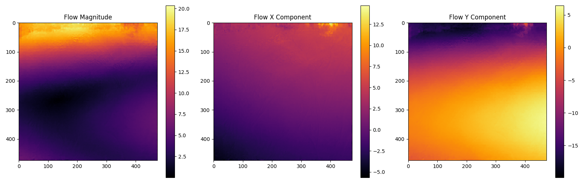
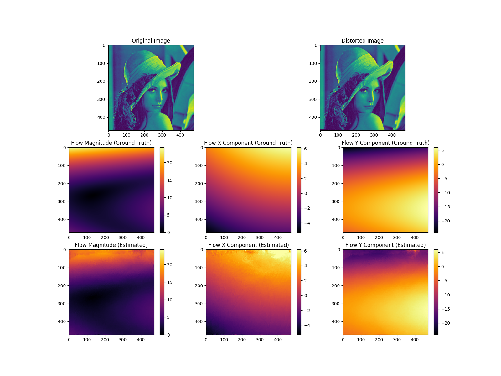
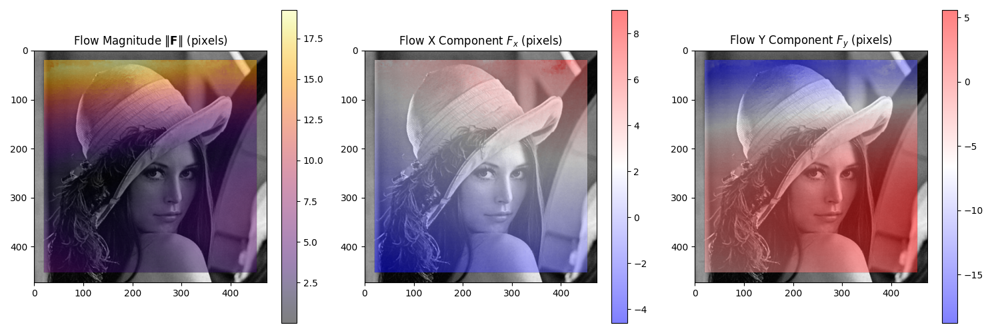
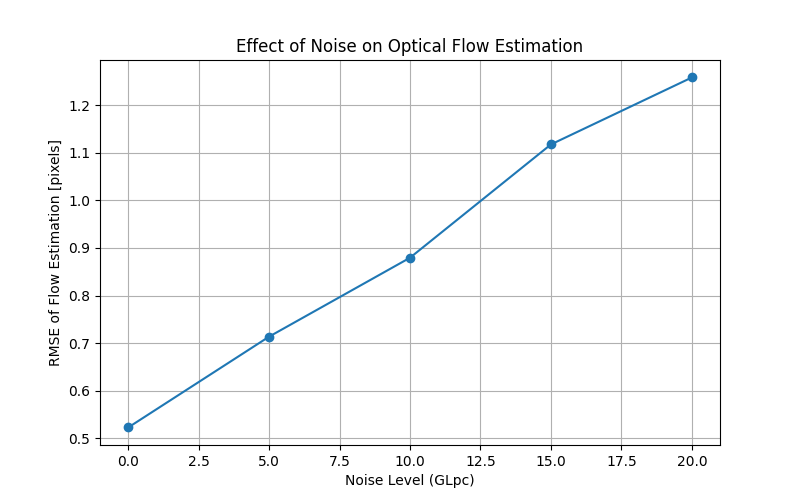

Note
Go to the end to download the full example code.
Computing optical flow between two images#
This example illustrate how to use the compute_optical_flow function to compute the optical flow between two images.
See also
pycvcam.compute_optical_flow()for the function to compute optical flow between two images.
Simple Worflow#
The optical flow between two images can be computed using the compute_optical_flow function.
The function takes two images as input and returns the optical flow as a tuple of two
arrays representing the flow in the x and y directions, respectively.
Optionnally, OpenCv parameters can be passed to the function to control the optical flow computation.
import pycvcam
import numpy
import os
import matplotlib.pyplot as plt
image = pycvcam.get_lena_image()
image = image.astype(numpy.float64)
height, width = image.shape[:2]
zernike_distortion = pycvcam.ZernikeDistortion(
parameters=[
0.8541972545746392,
-5.468596289790535,
-5.974287819021697,
14.292956075116104,
2.1403205479372627,
4.544169430137205,
-0.10099732464199339,
0.4363509204067417,
-0.5106374355681896,
-5.770087687650705,
-0.39147505788710696,
11.699411273002498,
] # In pixels units, example values for a small distortion
)
zernike_distortion.center = ((width - 1) / 2, (height - 1) / 2)
zernike_distortion.radius = numpy.sqrt(
(zernike_distortion.center[0]) ** 2 + (zernike_distortion.center[1]) ** 2
)
distorted_image = pycvcam.distort_image(
image,
intrinsic=None,
distortion=zernike_distortion,
method="distort",
interpolation="linear",
)
# Convert the images to uint8 format for optical flow computation
uint8_image = numpy.clip(numpy.round(image), 0, 255).astype(numpy.uint8)
uint8_distorted_image = numpy.clip(numpy.round(distorted_image), 0, 255).astype(
numpy.uint8
)
dis_flow = pycvcam.compute_optical_flow(
uint8_image,
uint8_distorted_image,
)
dis_fx, dis_fy = dis_flow # Shape (height, width)
dis_F = numpy.sqrt(dis_fx**2 + dis_fy**2)
plt.figure(figsize=(16, 5))
plt.subplot(1, 3, 1)
plt.title("Flow Magnitude")
plt.imshow(dis_F, cmap="inferno")
plt.colorbar()
plt.subplot(1, 3, 2)
plt.title("Flow X Component")
plt.imshow(dis_fx, cmap="inferno")
plt.colorbar()
plt.subplot(1, 3, 3)
plt.title("Flow Y Component")
plt.imshow(dis_fy, cmap="inferno")
plt.colorbar()
plt.tight_layout()
plt.show()

This computation can be compare to the real flow computation by applying the distortion to the pixel coordinates and computing the flow as the difference between the distorted and original pixel coordinates.
image_points = numpy.indices((height, width)).reshape(2, -1).T
pixel_points = image_points[:, ::-1] # Swap x and y to get (x, y) format
distorted_points = zernike_distortion.distort(pixel_points).transformed_points
flow = distorted_points - pixel_points
fx = flow[:, 0].reshape(height, width)
fy = flow[:, 1].reshape(height, width)
F = numpy.sqrt(fx**2 + fy**2)
minf, maxf = numpy.min(F), numpy.max(F)
minfx, maxfx = numpy.min(fx), numpy.max(fx)
minfy, maxfy = numpy.min(fy), numpy.max(fy)
print(f"Flow magnitude range: [{minf:.3f}, {maxf:.3f}]")
print(f"Flow X component range: [{minfx:.3f}, {maxfx:.3f}]")
print(f"Flow Y component range: [{minfy:.3f}, {maxfy:.3f}]")
print("Mean flow magnitude:", numpy.mean(numpy.linalg.norm(flow, axis=1)))
plt.figure(figsize=(16, 12))
plt.subplot(3, 2, 1)
plt.title("Original Image")
plt.imshow(image.astype(numpy.uint8))
plt.subplot(3, 2, 2)
plt.title("Distorted Image")
plt.imshow(distorted_image.astype(numpy.uint8))
plt.subplot(3, 3, 4)
plt.title("Flow Magnitude (Ground Truth)")
plt.imshow(F, cmap="inferno", vmin=0, vmax=maxf)
plt.colorbar()
plt.subplot(3, 3, 5)
plt.title("Flow X Component (Ground Truth)")
plt.imshow(fx, cmap="inferno", vmin=minfx, vmax=maxfx)
plt.colorbar()
plt.subplot(3, 3, 6)
plt.title("Flow Y Component (Ground Truth)")
plt.imshow(fy, cmap="inferno", vmin=minfy, vmax=maxfy)
plt.colorbar()
plt.subplot(3, 3, 7)
plt.title("Flow Magnitude (Estimated)")
plt.imshow(dis_F, cmap="inferno", vmin=0, vmax=maxf)
plt.colorbar()
plt.subplot(3, 3, 8)
plt.title("Flow X Component (Estimated)")
plt.imshow(dis_fx, cmap="inferno", vmin=minfx, vmax=maxfx)
plt.colorbar()
plt.subplot(3, 3, 9)
plt.title("Flow Y Component (Estimated)")
plt.imshow(dis_fy, cmap="inferno", vmin=minfy, vmax=maxfy)
plt.colorbar()
plt.tight_layout()
plt.show()

Flow magnitude range: [0.012, 24.302]
Flow X component range: [-5.293, 6.182]
Flow Y component range: [-24.122, 5.986]
Mean flow magnitude: 6.324732682604786
/home/fdahe241/Programs/pycvcam/gallery/optical_flow.py:148: UserWarning: tight_layout not applied: number of columns in subplot specifications must be multiples of one another.
plt.tight_layout()
Displaying the optical flow#
The optical flow can be directly visualized on the input image using the display_optical_flow
function, which takes the original image and the computed flow as input.
See also
pycvcam.display_optical_flow()for the function to visualize the optical flow on an image.
pycvcam.display_optical_flow(
image.astype(numpy.uint8),
flow_x=dis_fx,
flow_y=dis_fy,
display_region=[20, 20, width - 40, height - 40],
)

Studying the effect of the noise on the optical flow estimation#
The effect of noise on the optical flow estimation can be studied by adding noise to the input images and comparing the estimated flow with the ground truth flow.
The error computation is done in the sub domain of 20 pixels from the borders to avoid the effect of the borders on the error computation.
noise_GLpc = numpy.linspace(0, 20, num=5) # Noise levels to test
noise_rmse = []
for noise_level in noise_GLpc:
N_mean = 5
list_cost = []
for _ in range(N_mean):
noise_random = numpy.random.normal(0, noise_level / 100, size=image.shape)
noisy_distorted_image = distorted_image * (
1 + noise_random
) # Add multiplicative noise to the image
uint8_noisy_distorted_image = numpy.clip(
numpy.round(noisy_distorted_image), 0, 255
).astype(numpy.uint8)
noisy_dis_flow = pycvcam.compute_optical_flow(
uint8_image,
uint8_noisy_distorted_image,
)
noisy_dis_fx, noisy_dis_fy = noisy_dis_flow # Shape (height, width)
error = numpy.sqrt(
(noisy_dis_fx - fx) ** 2 + (noisy_dis_fy - fy) ** 2
) # shape (height, width)
crop_error = error[20 : height - 20, 20 : width - 20] # Exclude borders
rmse = numpy.sqrt(numpy.mean(crop_error**2))
list_cost.append(rmse)
noise_rmse.append(numpy.mean(list_cost))
plt.figure(figsize=(8, 5))
plt.plot(noise_GLpc, noise_rmse, marker="o")
plt.title("Effect of Noise on Optical Flow Estimation")
plt.xlabel("Noise Level (GLpc)")
plt.ylabel("RMSE of Flow Estimation [pixels]")
plt.grid()
plt.show()

Total running time of the script: (0 minutes 6.180 seconds)